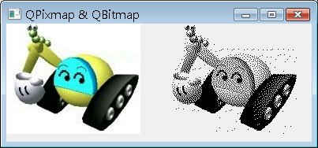

QPixmap繼承了QPaintDevice，您可用以建立QPainter並於上進行繪圖，您也可以直接指定圖案載入Qt所支援的圖檔，像是BMP、GIF、JPG、JPEG、PNG等，並使用QPainter的drawPixmap()繪製在其它的繪圖裝置上。您可以在QLabel、QPushButton上設定QPixmap以顯示圖像。QPixmap是針對螢幕顯示圖像而設計並最佳化，依賴於所在平台的原生繪圖引擎，所以一些效果的展現（像是反鋸齒），在不同的平台上可能會有不一致的結果。
QBitmap是QPixmap的子類別，提供單色圖像，可用於製作游標（QCursor）或筆刷（QBrush）物件。下面的程式載入相同的圖檔，以觀看QPixmap與QBitmap的呈現效果：
#include <QApplication>
#include <QWidget>
#include <QPainter>
#include <QBitmap>
class PainterWidget : public QWidget {
protected:
void paintEvent(QPaintEvent*);
};
void PainterWidget::paintEvent(QPaintEvent *event) {
QPixmap pixImg("caterpillar.jpg");
QBitmap bitImg("caterpillar.jpg");
QPainter painter(this);
painter.drawPixmap(0, 0, pixImg);
painter.drawPixmap(200, 0, bitImg);
}
int main(int argc, char *argv[]) {
QApplication app(argc, argv);
PainterWidget pWidget;
pWidget.setWindowTitle("QPixmap & QBitmap");
pWidget.resize(400, 150);
pWidget.show();
return app.exec();
}
執行後的結果如下圖所示：

QPixmap使用平台的繪圖引擎，在不同的平台所呈現的效果不一，無法提供個別像素的存取，QImage使用Qt自身的繪圖引擎，可提供在不同平台上相 同的圖像呈現效果，並可透過setPixpel()、pixel()等方法，直接存取指定的像素，例如在Qt的QImage文件中，就有提供以下的範例：
 |
QImage image(3, 3, QImage::Format_RGB32); |
QPicture則是個繪圖裝置，可以記錄並重播QPainter的繪圖指令，您可以使用QPainter的begin()方 法，指定在QPicture上進行繪圖，使用end()方法結束繪圖，使用QPicture的save()方法將QPainter所使用過的繪圖指令存至 檔案，例如：
QPicture picture;
QPainter painter;
painter.begin(&picture);
painter.drawRect(10, 20, 100, 50);
painter.end();
picture.save("draw_record.pic");
QPainter painter;
painter.begin(&picture);
painter.drawRect(10, 20, 100, 50);
painter.end();
picture.save("draw_record.pic");
要重播繪圖指令的話，建立一個QPicture，使用load()方法載入繪圖指令的檔案，然後在指定的繪圖裝置上繪製QPicture：
QPicture picture;
picture.load("draw_record.pic");
QPainter painter;
painter.begin(this);
painter.drawPicture(0, 0, picture);
painter.end();
picture.load("draw_record.pic");
QPainter painter;
painter.begin(this);
painter.drawPicture(0, 0, picture);
painter.end();